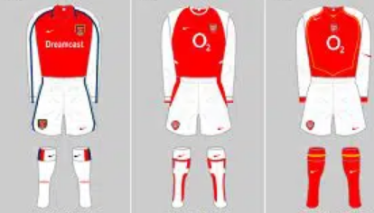
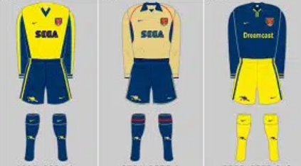

Let me introduce you to Arsenal F.C., aka "The Gunners". The iconic club is based in London and was founded
in October 1886 by David Danskin and his fellow munition workers. The club has won numerous trophies, including
13 league titles, a record 14 F.A. cups, two League cups, 16 F.A. Community shields, one European Cup winners' Cup,
and one Inter-Cities Cup. The standout trophy was the 2003/04 Premier League season which they won without losing
a single match; no other club has achieved the same feat.
Colours
Arsenal's home colours are usually bright red shirts with white sleeves, white shorts and red or white socks. Arsenal's home
colours have inspired other clubs' home kits, such as Sparta Prague, Hibernian, Santa Fe and Sporting Clube de Braga.

Arsenal's home kits style
The club's away colours are usually yellow, green, gold or blue. Due to the lucrative kit market, there is variation in the
designs of the away and third kits.

Arsenal's away and 3rd kits style
Stadiums
The first stadium that was used by the club was called Manor Ground. Between September 1913 to May 2006, Arsenal's home stadium
was Highbury in north London. The Gunners then moved to the Emirates Stadium at the beginning of the 2006/07 season, where they still play.